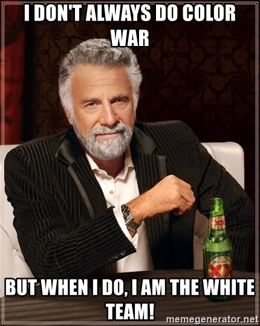

Les différences entre Red Team et Pentest
Qui n'a jamais entendu autour de lui "Je fais du Red Team, du vrai Red Team !" ? Cette phrase, je l'ai souvent entendu dans des conférences, des soirées infosec et j'en passe, là où il fallait placer Red Team dans une conversation, à coup sûr ça faisait mouche. Mais qu'en est-il vraiment ? est-ce du pentest ? est-ce que le pentest peut être considéré comme Red Team ? cet article n'a pas vocation à être technique et a pour but de démystifier la chose et expliquer clairement ce qu'il en est.
La Red Team
La Red Team est une équipe composée de plusieurs membres dont les tâches peuvent être diverses et dont l'objectif est de tester principalement le temps de réponse des équipes de sécurité défensives (SOC - Blue Team). Elle doit penser à varier ses TTPs (Tactics, Techniques & Procedures) et donc innover et proposer de nouvelles charges malveillantes pouvant contourner les mesures en place pour challenger ces équipes. Voici une liste de tâche que nous retrouvons la plupart du temps dans un premier temps durant un exercice Red Team :
- Reconnaissance sur les réseaux sociaux
- Reconnaissance sur les assets exposés sur Internet sans interaction directe (i.e : Shodan, ZoomEye, Certificate Transparency etc...)
- Mise en place de l'infrastructure (C2)
- Achat de domaines catégorisés ou catégorisation de domaines "neutres"
- Préparation des templates de phishing
- Préparation des mails de catégorisation
- Préparation des mails de phishing
- Développement de payloads
Cette première étape est considérée comme une activité dite passive, il s'agit simplement de mettre en place les outils nécessaires à l'exercice Red Team et faire de la reconnaissance pour mieux connaître la cible de la mission. Cette partie n'est pas à négliger car elle nécessite un temps plutôt conséquent notamment sur le côté R&D, il faut maintenir les outils permettant de mettre en place l'infrastructure, développer des payloads (charges malveillantes) permettant de contourner des antivirus et EDR (Endpoint Detection & Response) mais également de créer de faux comptes sur les réseaux sociaux et les entretenir. Dans un second temps, l'équipe Red Team passe dans un mode d'activité dite semi-offensive, il s'agit en réalité d'envoyer des mails de catégorisation, ces mails ne contiennent pas encore les charges malveillantes mais seulement une image ou un lien vers l'infrastructure de la Red Team. Ils ont un but précis, ils vont permettre à l'équipe de savoir différentes choses :
- Est-ce qu'une passerelle mail bloque la réception des mails via un antivirus ou une règle particulière ?
- Notre domaine est-il bien catégorisé et non filtré ?
- Notre mail finit-il dans les spams ?
- Un équipement réseau bloque t'il la réception ?
- Est-ce que le proxy sortant filtre la sortie vers notre infrastructure ?
- Quel est le type de client mail, sa version, son user-agent ?
Une fois que la Red Team a pu obtenir une première communication via ces mails de catégorisation, celle-ci va pouvoir passer dans sa phase offensive. Elle procéde donc à une reconnaissance active sur les assets exposés comme du scan de ports ouverts, de la recherche de vulnérabilités pouvant être exploitées, du password spraying sur les services exposés pour repérer des mots de passes faibles ou des mots de passes par défaut par exemple. Si un accès a été repéré, il est à ce moment-là utilisé pour mettre en place les charges malveillantes, sinon les charges sont envoyées à la cible par mail, cela peut être sous différentes formes, un exécutable, un fichier doc, un fichier hta etc.... Si la charge malveillante est exécutée par la cible et qu'un premier beacon ou implant est disponible pour la Red Team, elle passe dans un mode de reconnaissance interne du réseau. À ce moment-là, plusieurs possibilités s'offrent à la Red Team :
- Reconnaissance via des requêtes LDAP (BloodHound, PowerView, LDAPSearch)
- Reconnaissance sur les partages réseaux
- Reconnaissance sur les ranges d'adresses IP (services accessibles en Interne)
- Reconnaissance sur le poste de l'utilisateur concerné (des mots de passes sont-il présents ou autre information essentielle ?)
etc...
Ces informations permettent ensuite à la Red Team de rebondir sur le réseau via des mouvements latéraux jusqu'à remplir les objectifs de la mission qui peuvent être variés (compromission d'un poste ou d'un serveur en particulier, devenir admin de domaine, prouver qu'il est possible de détourner de l'argent, réaliser une simulation d'attaque de type Ransomware et bien d'autres). Et là vous allez me dire "Oui mais tout ça c'est du pentest interne ?". Urgh, à ce moment-là, je risque grincer des dents, pour plusieurs raisons :
- Durant un exercice Red Team, les équipes de sécurité ne sont pas au courant de celui-ci, en pentest, elles le sont
- Le périmètre définit en pentest est très souvent plus petit qu'un périmètre Red Team
- Une Red Team va chercher à aller d'un point A à un point B et remontera essentiellement les vulnérabilités sur ce chemin
- Un pentester va lui, devoir remonter des vulnérabilités de façon générale sur un périmètre définit en testant différents chemins
- Un pentester n'aura souvent pas besoin de réaliser de l'ingénierie sociale sur les réseaux sociaux sauf sur prestation dédiée
- Enfin, une White Team que je mentionnerais plus bas n'est pas nécessaire lors d'un pentest
Vous l'aurez donc compris, un exercice Red Team n'est pas un pentest, et il serait intéressant que ce terme ne soit plus utilisé à outrance. Enfin, contrairement à un pentest, une équipe peut être amenée à effectuer des tests d'intrusion physique en plus d'une intrusion dans un système d'information. Cela implique du coup plus de préparation, l'objectif étant à ce moment-là pour la Red Team de réussir à rentrer physiquement dans un bâtiment en trouvant des légendes (prétextes pour effectuer de l'ingénierie sociale afin de réussir à poser un implant physique dans le bâtiment sans dévoiler son identité d'opérateur Red Team). Bien sûr, pour garantir la sécurité physique de l'opérateur Red Team, une fiche de mission doit être fournie à celui-ci qui atteste qu'il s'agit bien d'un exercice Red Team, la date de l'exercice, sa durée ainsi que son périmètre (adresses des bâtiments concernés). Cela permet notamment d'éviter qu'une personne de l'équipe se retrouve en garde à vue, la mésaventure est arrivée à deux consultants en 2019 : https://portswigger.net/daily-swig/coalfire-arrests-charges-against-us-pen-testers-finally-dropped
La Blue Team
La Blue Team a pour mission lors d'un exercice Red Team, de détecter les méthodes utilisées par la Red Team, et de réaliser une réponse à incident en cas de détection comme si c'était un attaquant réel. Durant un exercice Red Team, la Blue Team n'est pas mise dans la confidence, elle ne sait donc pas qu'un exercice peut se dérouler à tout moment. Une bonne Blue Team est une équipe qui va donc être disponible en permanence 24h/24 et 7 jours sur 7 pour monitorer ce qu'il se passe sur le réseau et notamment sur l'Active Directory. Elle est souvent composée de deux composantes majeures :
- Le CERT (Computer Emergency Response Team) ou CISRT (Computer Security Incident Response Team)
- Un SOC (Security Operations Center)
Le CERT/CISRT a pour mission d'anticiper les incidents de sécurité via des activités de renseignements sur les menaces ainsi que les acteurs malveillants. Il a aussi pour mission de remédier aux incidents de sécurité du SI (Système d'Information), intervenir dans leur résolution et également de partager une veille technologique sécurité sur les actualités cyber et sur les vulnérabilités. La plupart des CERTs en France peuvent demander à rejoindre une communauté nommée InterCERT France et ainsi échanger des informations sur les menaces potentielles. Un SOC est quant à lui, une équipe de sécurité chargée de surveiller et d'analyser en permanence le Système d'Information, et d'intervenir en cas d'incidents, contrairement à un CERT, il n'a pas pour vocation à se renseigner sur des groupes d'attaquants mais c'est à lui de faire remonter les informations d'un incident au CERT. Pour détecter des événements anormaux, cette équipe possède plusieurs outils notamment des EDR mentionnés plus haut qui permettent de détecter des actions malveillantes réalisés sur un poste de travail comme :
- Des injections suspicieuses dans un processus
- Des modifications dans le registre Windows
- La mise en place de moyens de persistance (tâches planifiées par exemple)
- Des modifications suspectes de fichiers
- Des dumps mémoire
- Un enchaînement de comportements suspects sur le poste
etc...
La Blue Team possède également des sondes réseaux IPS (Intrusion Prevention System) et IDS (Intrusion Detection System) qui sont généralement reliées à un SIEM (Security Information and Event Management). Un SIEM est un outil permettant de collecter et d'agrèger des données, la plupart du temps, il s'agit de logs de tous les équipements réseaux, postes de travail, serveurs que la Blue Team a jugée utile de monitorer. Cet outil permettant comme vous l'aurez sans doute deviné, est d'observer le réseau via une interface permettant de faire des recherches précises et de mettre également en place des règles de détection. Ces règles sont souvent basées sur les TTPs (Tactics, techniques and procedures) d'acteurs malveillants et répertoriées par la communauté https://attack.mitre.org/ souvent implémentées dans les outils vendus actuels, ou bien définies par l'équipe Blue Team elle même. Elles permettent de détecter plusieurs actions comme par exemple :
- Des scans réseaux offensifs
- Utilisation d'exploits publics et connus
- Des comptes compromis ou des tentatives de compromission
- La mise en place de moyens de persistance
- Une élévation de privilèges
- Un contournement de permissions
- Un mouvement latéral
- Une communication vers un C2
etc...
Si la Blue Team détecte un exercice Red Team, à ce moment-là, l'exercice peut se transformer en Assume Breach, cela veut dire que l'exercice Red Team peut continuer en partant du principe qu'un attaquant a pu accéder au réseau interne. L'Assume Breach peut être aussi considéré comme du Purple Team, la Red Team doit mettre en évidence les vulnérabilités majeures et la Blue Team doit de son côté continuer à observer la Red Team tout en prélevant des traces de compromission ou d'événements. Certains diront que le Purple Team doit être une équipe à part entière en plus de l'équipe Red Team et Blue Team, ce n'est souvent pas le cas dans la réalité car il est très simple pour une Red Team et une Blue Team de communiquer ensemble sans avoir besoin d'une équipe intermédiaire dédiée à ça. Que ça soit en mode Assume Breach ou sans avoir détectée la Red Team, le rôle de la Blue Team en fin de mission est de fournir tous les éléments en sa possession à la Red Team et à la White Team pour lister ce qui a et n'a pas été identifié durant l'exercice et ainsi améliorer les capacités de détection.
La White Team
 La White Team est souvent composée d'une ou plusieurs personnes côté Blue Team et/ou de personnes du Management ainsi que d'une personne côté Red Team qui auront pour rôle d'encadrer l'exercice. Ces personnes sont donc au courant de l'exercice ainsi que des actions réalisées des deux côtés, que cela soit côté Blue ou côté Red, si la Red Team va trop loin, cette équipe devra à ce moment-là l'indiquer à la Red Team. Les personnes de la White Team qui sont Blue à l'origine, ne doivent pas communiquer qu'un exercice est en cours aux autres personnes Blue qui ne sont pas dans la White Team. Ainsi, les personnes de la White Team peuvent définir les limites de l'exercice mais également donner des incides à la Red Team si cela est nécessaire pour gagner du temps. Imaginons, la Red Team a découvert un chemin de compromission sur l'Active Directory, au lieu de perdre 2 jours ou plus à identifier les machines intéressantes pour l'exercice, la White Team pourra communiquer à la Red Team où se trouve ces machines, dans quelle forêt de l'AD par exemple. Tout ce que j'ai pu expliquer ici, se retrouve notamment dans la documentation TIBER-EU disponible ici : https://www.ecb.europa.eu/paym/cyber-resilience/tiber-eu/html/index.en.html
Tableau comparatif Red Team / Pentest
| Red Team | Pentest | |
|---|---|---|
| La Blue Team est au courant de l'exercice ? | Non | Oui |
| Le périmètre durant l'exercice est ? | Plus grand | Plus petit |
| Comment sont remontées les vulnérabilités ? | Remontées en allant d'un point A à un point B | Remontées sur tout le scope définit |
| L'exercice a t'il besoin d'ingénierie sociale sur les réseaux sociaux ? | Oui | Non |
| Une White Team est-elle nécessaire à l'exercice ? | Oui | Non |
Mot de la fin
J'espère que cet article a pu être le plus clair possible, et qu'il a pu vous donner une vision d'ensemble sur ce qui est réalisé durant un exercice Red Team. Le Red Team comme vous avez pu le voir demande une plus grande préparation qu'un pentest et les missions durent souvent plusieurs semaines jusqu'à 2 ou 3 mois pour les missions classiques. Cela ne veut pas dire qu'un Pentest est moins important qu'un exercice Red Team, les deux ont des objectifs différents et se complètent pour améliorer la sécurité d'une entreprise. Il est important de préciser qu'un exercice Red Team est réalisé à la suite de pentests internes et que la cible a normalement atteint un niveau de maturité pour se prêter à l'exercice. En France, ces exercices se développent au fur et à mesure mais les entreprises ne connaissent pas bien la différence ou ne voient pas un réel intérêt d'avoir une Red Team. Cet article a pour but d'inciter les entreprises à développer ce domaine qui est pour ma part fondamental pour obtenir un degré de maturité au niveau de la sécurité de leur système d'information.
Crédits
Cet article est en mémoire à CrashFR qui a passé son vivant à démystifier son domaine. Un grand merci à Ottersec (@ottersecx) pour la relecture de cet article https://twitter.com/ottersecx